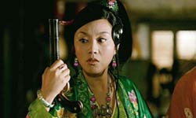
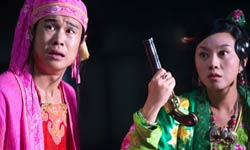
A Simple Noodle Story, internationally A Woman, a Gun and a Noodle Shop. is a 2009 film directed by Zhang Yimou. It is a remake of Blood Simple, the 1984 debut of the Coen Brothers, whose films Zhang lists as among his favourites. The film transports the original film's plot from a town in Texas to a noodle shop in a small desert town in Gansu province. The film is a mixture of a thriller and screwball comedy. The film stars Sun Honglei, Ni Dahong in the thriller segment while comedians Xiao Shen Yang and Yan Ni star in the comedic segment. The film has been described as a considerable departure from the director's previous works.
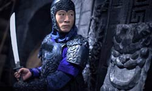
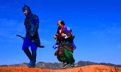
Inspired by Blood Simple, the story revolves around Wang, a depressed but cunning noodle shop owner. His wife cheats on him with one of his employees, but Wang becomes aware of the fact and decides to hire a policeman named Zhang to kill them both. Zhang, however has an agenda of his own and the bodies begin piling up. Zhang makes a smart adaptation, transferring the original’s setting to an earlier century in China, but retaining the slapstick combination of comedy and thriller. However, eventually he loses his sense of proportion and the film becomes somewhat tedious, eventually transforming into an uninteresting and occasionally confusing succession of black humour and violence.
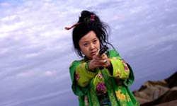
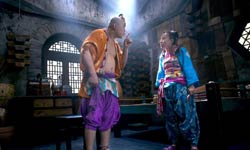
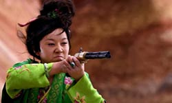
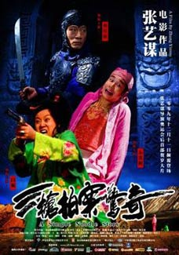
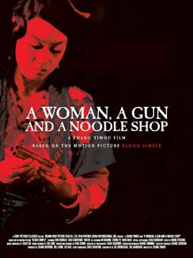
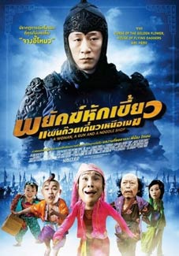
Zhang first saw the original Blood Simple in the 1980s, he says, but he spoke no English and there were no subtitles. Still, it obviously left a deep impression on him. When he was searching for something "light and humorous" to refresh his palette after the Olympics, somehow it sprang to mind. The Coens' opinions are unknown, but they can hardly complain, having just come off a remake of True Grit. And compared to their Tom Hanks-led desecration of the cherished Ealing comedy The Ladykillers, Zhang's is a minor offence.
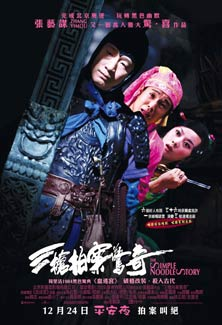
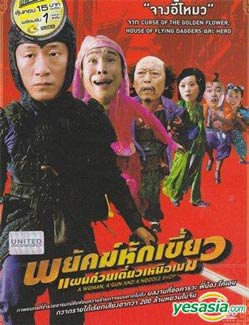
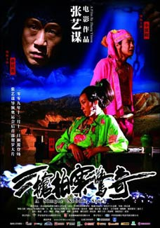